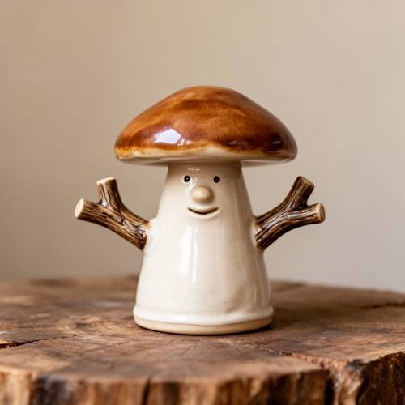
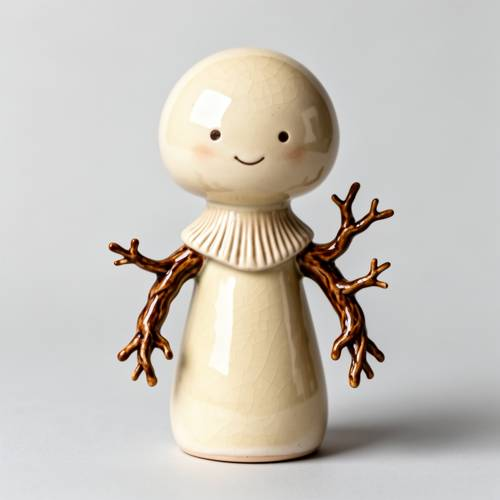
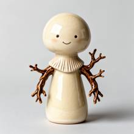

Grammar — Generated image: A ceramic mushroom man with arms like branches but no
Generated image: A ceramic mushroom man with arms like branches but no fungus cover on his head.

Direct — one call, no iteration

Continuum — Kimi K3 + FLUX.2-dev
Judge — Direct
FAILGrammar - Negation — The prompt specifies that the mushroom man should have 'no fungus cover on his head'. The image depicts a figure with a large, brown, glossy mushroom cap on its head. A mushroom cap is a part of a fungus. Therefore, the image contradicts the negative constraint in the prompt.
PASSCompound - Feature Matching — The image shows a figurine of an anthropomorphic mushroom character. The material has a glazed, shiny surface consistent with ceramic. The character's arms are shaped and colored to look like small tree branches. This accurately reflects the description 'A ceramic mushroom man with arms like branches'.
Judge — Continuum
PASSGrammar - Negation — The figure has a smooth, rounded, cream-colored head. There is no fungus cover, cap, or any feature resembling a mushroom cap on its head, fulfilling the negative requirement of the prompt.
PASSCompound - Feature Matching — The image displays a figurine that resembles a mushroom man, made of a material that appears to be ceramic due to its glossy, crackled glaze. The figure's two arms are brown and shaped like small, multi-pronged branches.
What the agent did
Thinking
The user wants an image: "A ceramic mushroom man with arms like branches but no fungus cover on his head." So a mushroom-person figure made of ceramic, with branch-like arms, and notably no mushroom cap on his head (bare head). Interesting — "no fungus cover on his head" means the head lacks the typical mushroom cap. Let me generate with flux2-dev.
Step 1 — `generate_image`
{
"prompt": "A whimsical ceramic figurine of a mushroom man, glossy glazed porcelain, standing upright. His body is the pale cream-colored stalk of a mushroom with subtle gill texture at the shoulders. His arms are thin, twisting brown ceramic tree branches with small twig fingers. His head is bare and smooth \u2014 a rounded glazed ceramic head with no mushroom cap on top, simple hand-painted face with two dot eyes and a small smile. Studio product photo, soft lighting, plain light-gray background, fine ceramic craftsmanship, crackle glaze details.",
"model": "flux2-dev"
}
Result img_0

Thinking
The image looks great: ceramic mushroom man, glossy glaze, crackle detail, gill collar at shoulders, branch-like brown arms, bare rounded head with no mushroom cap. This matches the prompt well. Mark best and stop.
Model
The result matches the prompt well on the first pass. Let me verify the details: - **Ceramic mushroom man** ✓ — glossy glazed porcelain body shaped like a mushroom stalk, with a gill-textured collar at the shoulders and subtle crackle glaze. - **Arms like branches** ✓ — both arms are twisting brown ceramic branches with twig-like fingers. - **No fungus cover on his head** ✓ — the head is a smooth, bare rounded ceramic dome with a simple painted face, and there's no mushroom cap anywhere.
Step 2 — `mark_best`
{
"image": "img_0",
"reason": "Matches the prompt on first generation: glazed ceramic mushroom-stalk body with gill collar, brown branch-like arms, and a bare rounded head with no mushroom cap."
}
Model
The image is complete and matches everything the prompt asked for: - A **ceramic mushroom man** with a glossy, crackle-glazed porcelain body shaped like a mushroom stalk, complete with gill texture at the shoulders - **Branch-like arms** — twisting brown ceramic limbs ending in small twig fingers - **No fungus cap on his head** — just a smooth, bare rounded head with a sweet hand-painted face It's presented as a clean studio product shot against a soft gray background. Marked as the final result.